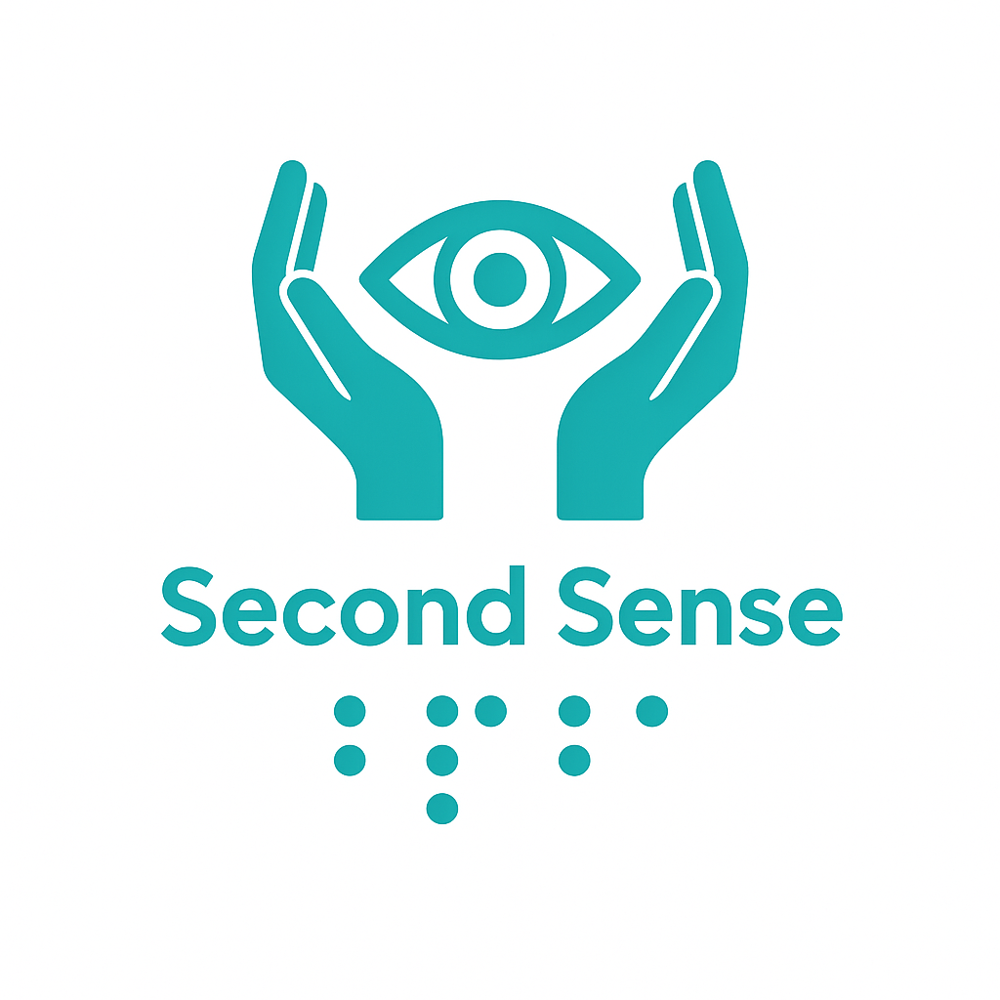
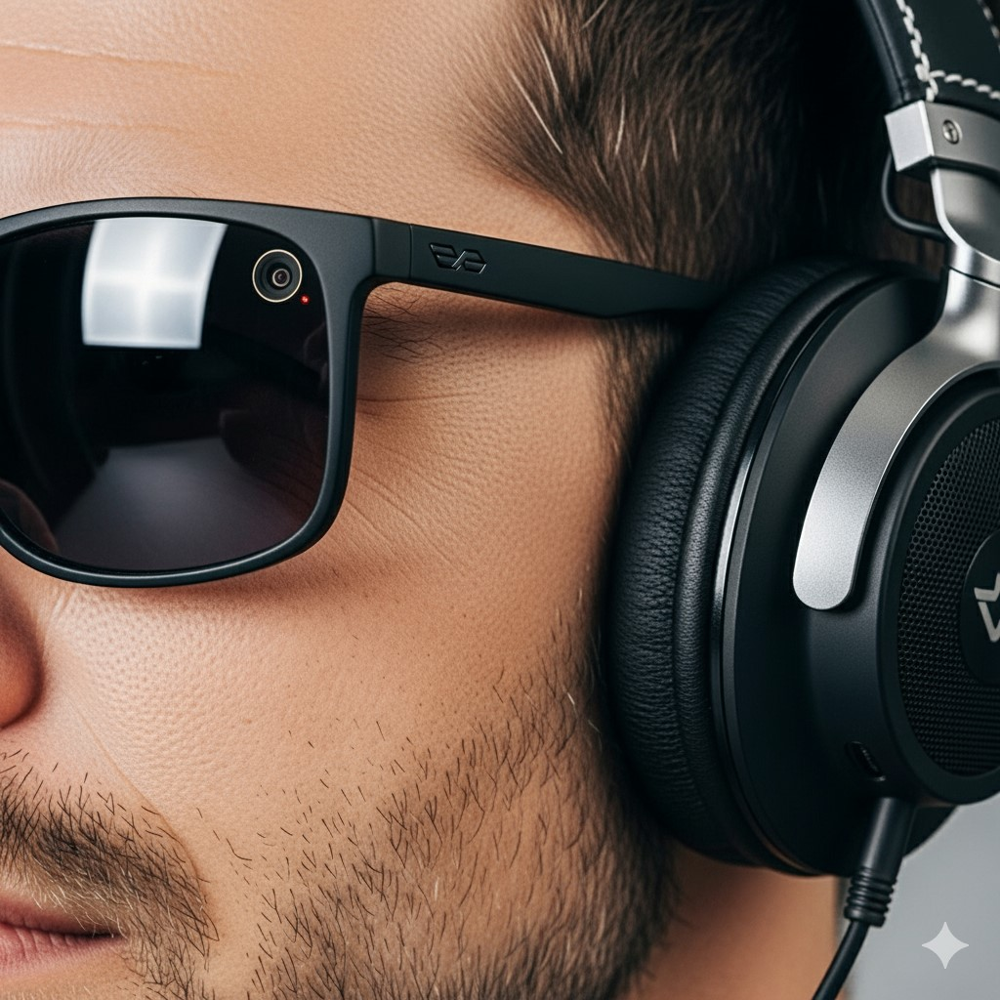
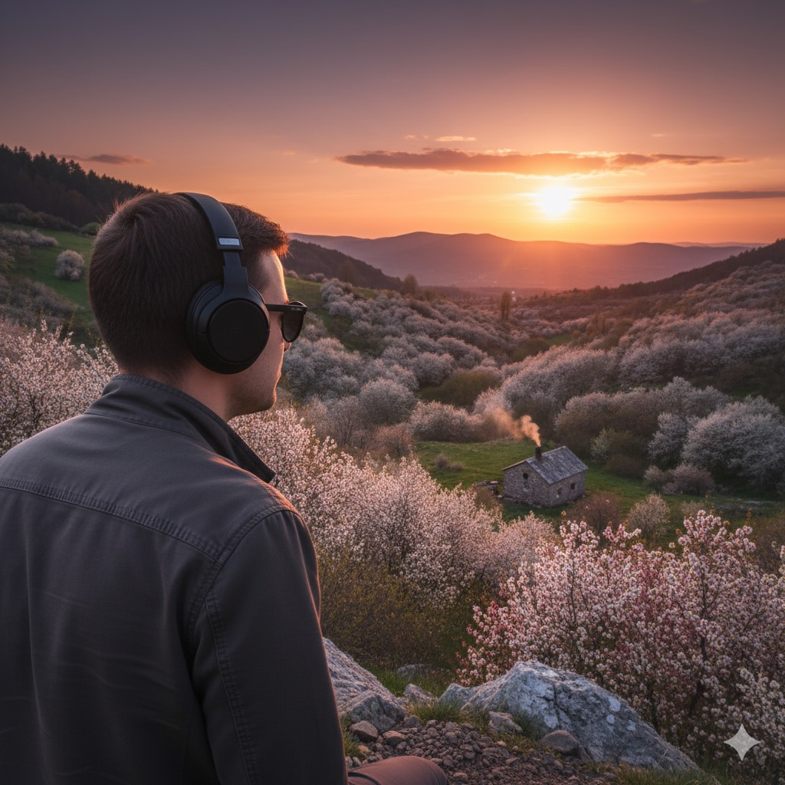
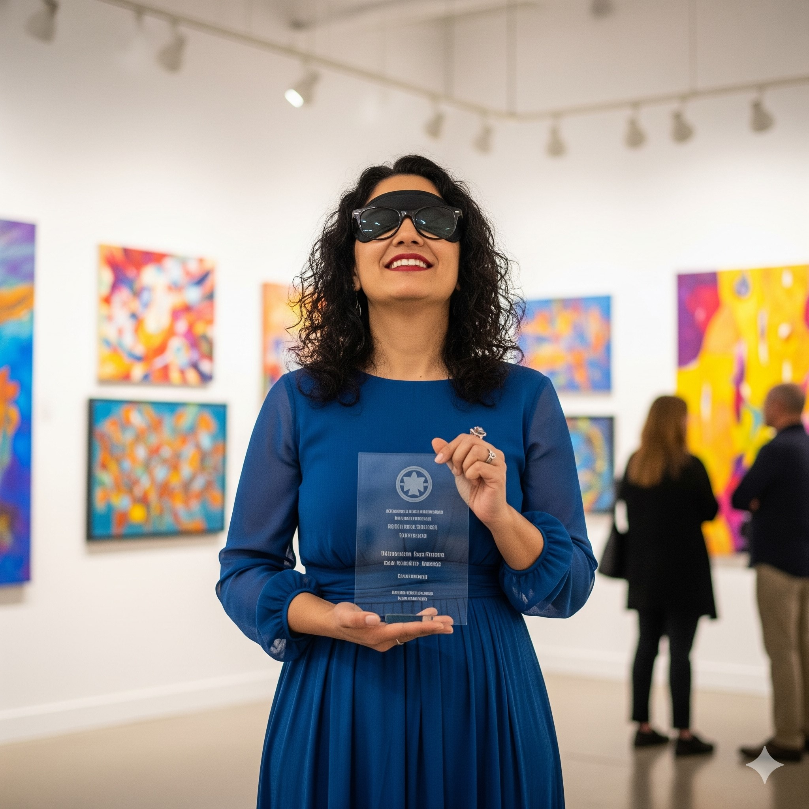
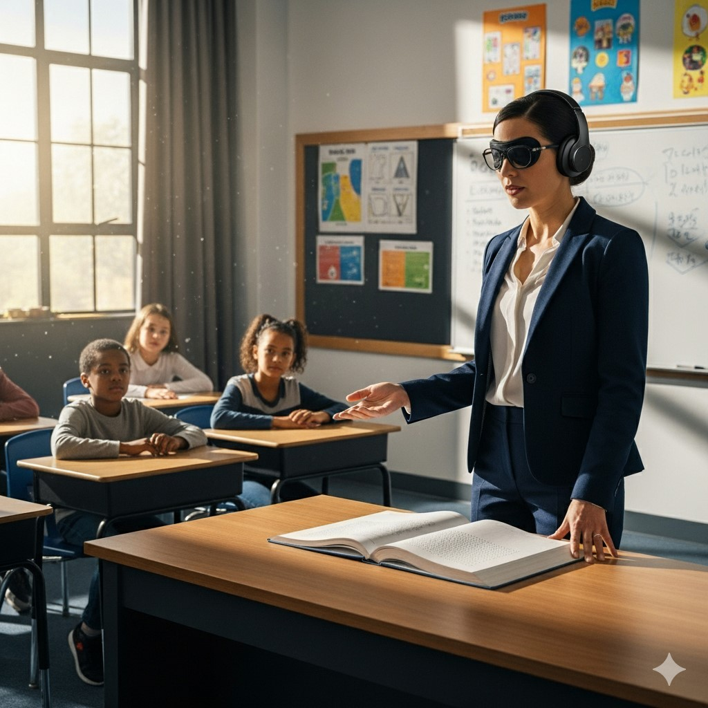

Незрячі та слабозорі
Ми шукаємо тих, хто бачить серцем. Хто хоче створити світ, де кожен має друге відчуття — і очі, що не залежать від зору.
Компанія "Друге відчуття" відкриває нові можливості для людей із вадами зору через проєкт "Друге відчуття: Очі". Завдяки інноваційним технологіям ми допомагаємо бачити світ по-новому — чітко, впевнено, без бар’єрів.
Підтримати проєкт"Друге відчуття: Очі" — це проєкт компанії "Друге відчуття", технологічна ініціатива, що відкриває світ для незрячих за допомогою штучного інтелекту. Ми створили перший прототип і тестуємо його, щоб зробити життя людей із вадами зору більш незалежним і комфортним.
Розробка прототипу, який працює на основі штучного інтелекту та функціонує в офлайн-режимі, щоб забезпечити доступність у будь-яких умовах.
Використовуємо аналіз фотографій, аудіоописи та передові алгоритми штучного інтелекту для створення зручного та ефективного інструменту.
Створюємо світ без бар’єрів, де кожен може вільно взаємодіяти з оточенням, незалежно від зорових обмежень.

Компанія "Друге відчуття" вірить, що зір — це не лише очі, а й можливість відчувати, творити та бути вільним. Через проєкт "Друге відчуття: Очі" ми поєднуємо передові технології з емпатією, щоб створити світ, де кожен має доступ до краси та можливостей життя. Наша мета — дати мільйонам незрячих і слабозорих людей нове цифрове відчуття.
"Друге відчуття: Очі" від компанії "Друге відчуття" використовує штучний інтелект для аналізу зображень у реальному часі, перетворюючи візуальну інформацію на детальні аудіоописи. Наш прототип уже працює в онлайн-режимі, а офлайн-режим заплановано реалізувати в майбутньому, щоб забезпечити доступність навіть у віддалених регіонах. Алгоритми ШІ адаптуються до індивідуальних потреб користувачів, надаючи точні та зрозумілі описи оточення — від міських вулиць до природних пейзажів.
Незабаром технологія працюватиме без інтернету, що зробить її доступною всюди.
ШІ вчиться розуміти потреби конкретного користувача.
Інтуїтивний інтерфейс, який легко використовувати людям будь-якого віку.
Хочете відчути, як народжується другий зір? Приєднуйтесь до нашого Telegram-каналу — разом ми робимо перші кроки до платформи, що змінює життя!
Долучитися до Telegram-каналуПротестуйте прототип та поділіться відгуками.
Ознайомтеся з макетом нашого прототипу — інноваційних smart-окулярів із вбудованою камерою та навушниками, які допомагають незрячим "бачити" світ через аудіоописи.

Ми шукаємо тих, хто бачить серцем. Хто хоче створити світ, де кожен має друге відчуття — і очі, що не залежать від зору.
Ми шукаємо тих, хто бачить серцем. Хто хоче створити світ, де кожен має друге відчуття — і очі, що не залежать від зору.
Ми шукаємо тих, хто бачить серцем. Хто хоче створити світ, де кожен має друге відчуття — і очі, що не залежать від зору.
Коли штучний інтелект стає відчуттям — змінюється все.

Мандрівник, який втратив зір, знову відчуває свободу. Завдяки "Друге відчуття: Очі" від компанії "Друге відчуття" він спокійно орієнтується у лабіринтах мегаполісів, перетинає шумні перехрестя, піднімається на вершини гір. Його голосовий провідник шепоче: "попереду відкрита долина, сонце торкається горизонту..." — і це стає новою реальністю.
"Я знову мандрую. Не очима — душею."

Колись фарби були лише відчуттям у пальцях. Тепер — це емоція, підсилена словами: "тут лінія горизонту, тут дерево, що тягнеться до неба". Художниця створює картини, керуючись не очима, а голосом ШІ від "Друге відчуття: Очі".
"Мої картини — це музика кольору, яку я чую."

Вчитель пояснює учням, як відчути хімію або географію не очима, а розумом. З "Друге відчуття: Очі" від компанії "Друге відчуття" він використовує візуальні підказки, щоб “перекладати” графіки та карти в прості звуки. І це відкриває двері до науки там, де їх раніше не було.
"Я вчу не бачити, а відчувати науку."
"Друге відчуття: Очі" від компанії "Друге відчуття" — це не просто технологія. Це новий рівень свободи, творчості та взаємодії зі світом для тих, хто не бачить очима, але бачить глибше.
Це не просто технологія. Це новий спосіб бачити. Відчувати. Жити. Ми — Друге відчуття. І ми відкриваємо очі там, де їх ніколи не було.
Ми — технологія з душею. Ми створюємо нове цифрове відчуття для тих, хто бачить серцем. "Друге відчуття: Очі" — це не просто інструмент. Це свобода, гідність і нова реальність для мільйонів.
Інвестуючи в "Друге відчуття: Очі", ви стаєте частиною технологічної революції з людським обличчям від компанії "Друге відчуття".
"Ми не просто створюємо продукт — ми відкриваємо світ тим, хто ніколи його не бачив."
Допоможіть профінансувати розробку.
Співпрацюйте для масштабування проєкту.
Приєднуйтесь до команди інноваторів.
Напишіть нам. Ми відповідаємо не просто словами — ми відповідаємо дією.